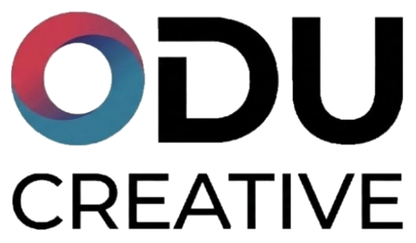

O Senhor Tromba, o elefantinho de pelúcia do Pongo, sumiu durante a aula de inglês da teacher Kate! Para encontrá-lo, o Pongo precisa fazer perguntas e responder a todo mundo. Ajude o Pongo com have / have got, Do you…? e I am doing × I do!